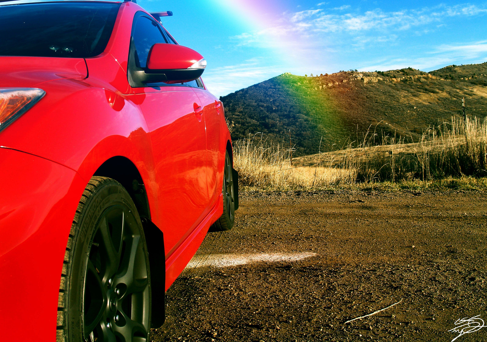
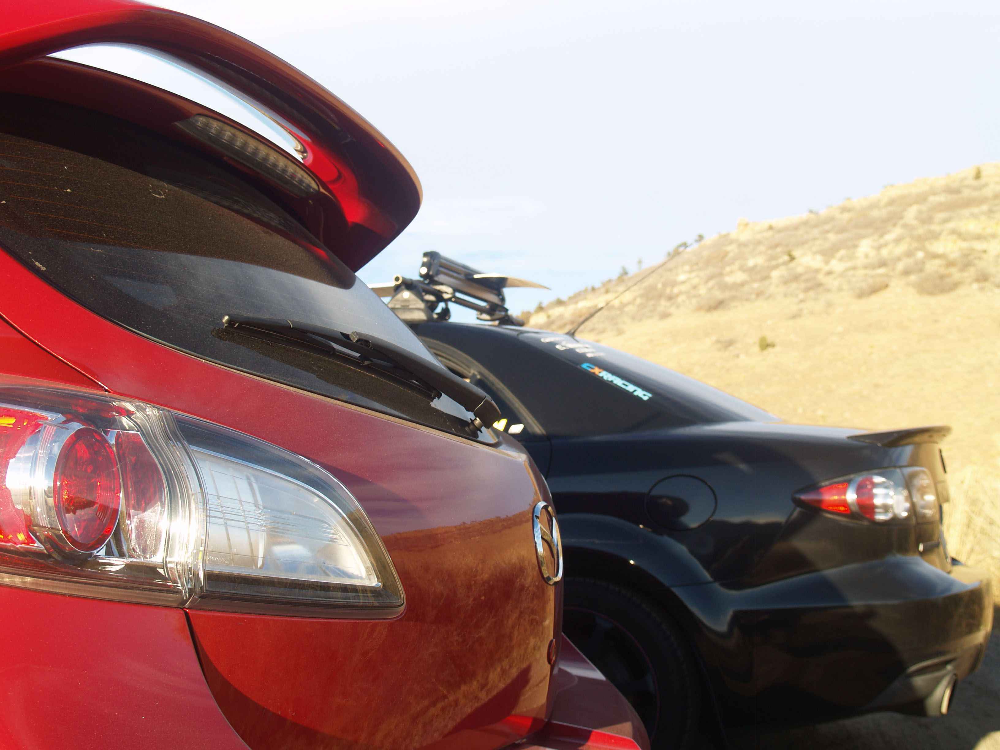
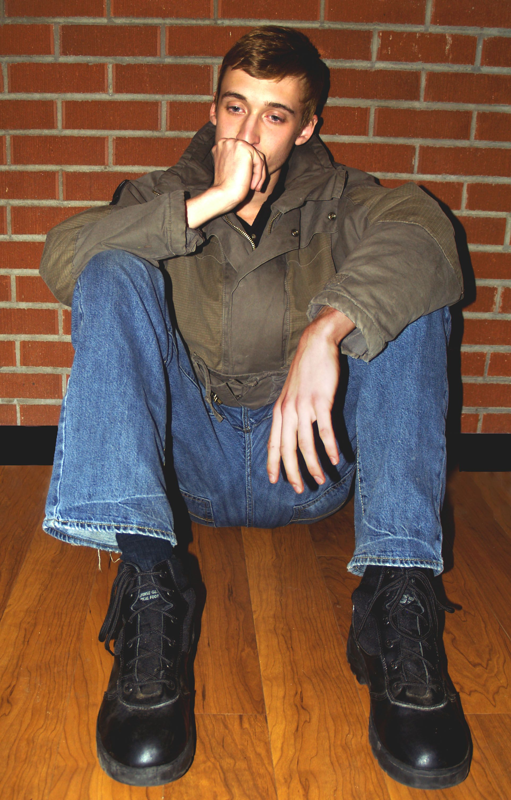
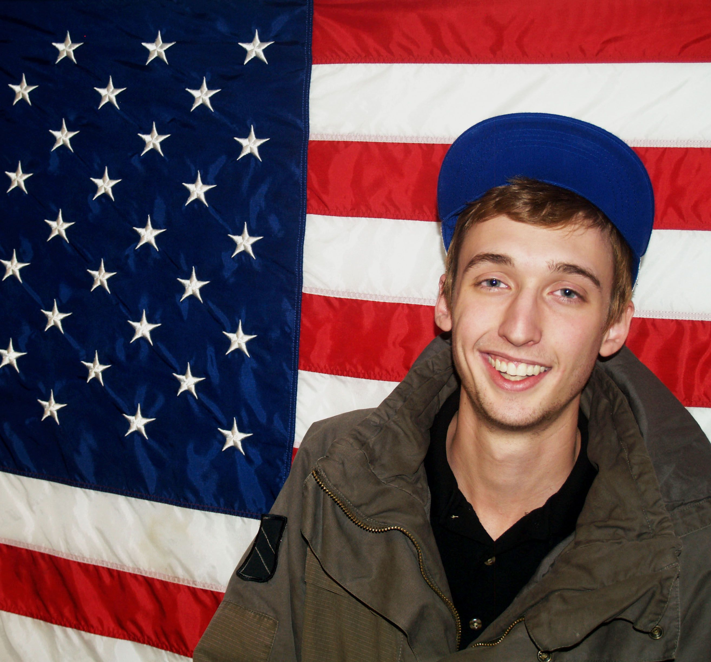
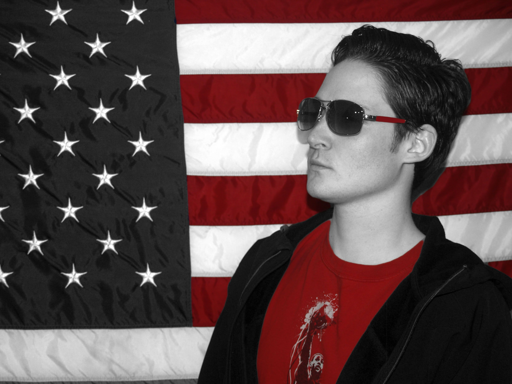
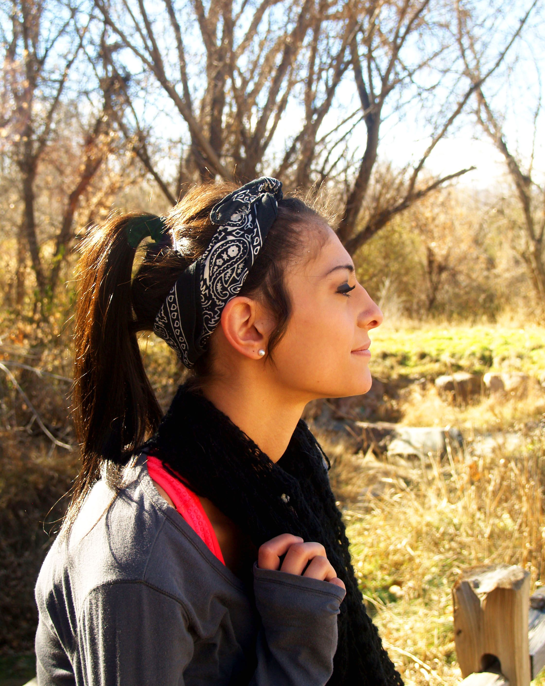
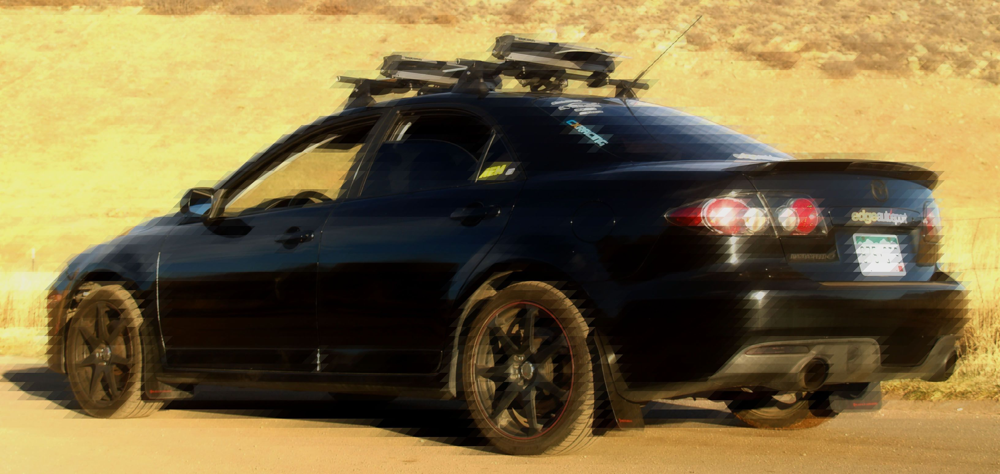
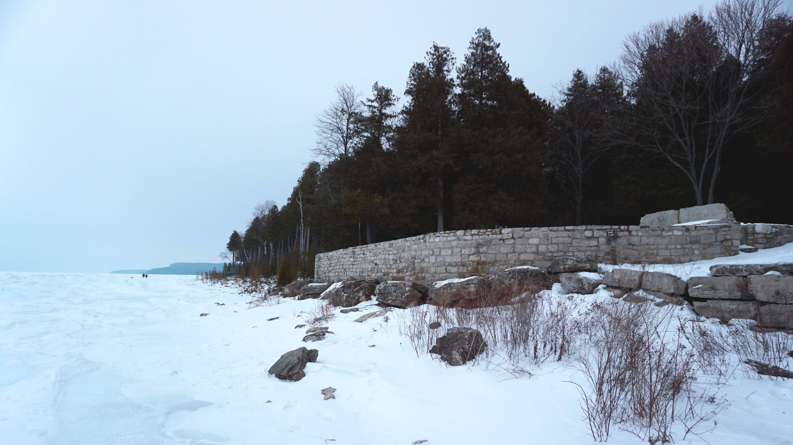

Looking Through Kyle's Eyes

An Editted Picture of Murphy's Car.

A different angle on some Mazdas

Brock, the Deep Thinker

American Flags are the best background

Charles looking good as ever, with some red highlights.

Hannah's Portrait
KD Portrait

Jorden's Mazda with some pixelation effect.

Some scenery in Door County, Wisconsin